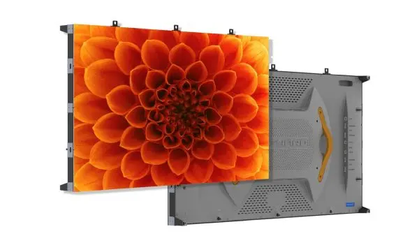

Маленький шаг пикселя (FPP)
Экраны Leyard FPP отличаются самым мелким шагом пикселей, что обеспечивает исключительную четкость и детализацию изображения. Идеально подходят для студий вещания, контрольных комнат и других приложений, где требуется максимальная точность и реалистичность изображения. Они обеспечивают безупречное качество изображения с широким углом обзора и минимизируют эффект “пиксельной структуры”.